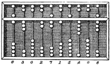
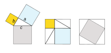

|
Otra de las ciencias formales son las matemáticas, estas se encargan del estudio, análisis, relaciones y propiedades de entidades abstractas como lo son los números, símbolos y las figuras geométricas, haciendo uso del razonamiento lógico.
Es una ciencia que se interrelaciona con muchas otras ciencias como por ejemplo la física o la astronomía entre otras.
Esta ciencia se divide en dos ramas principales que son las matemáticas puras y las aplicadas, derivándose a su vez en otras como El Álgebra, el Análisis matemático, el Análisis numérico, la Aritmética, las Ciencias de la computación, Criptografía, Estadística, Dinámica de fluidos, Estadística y probabilidad, Química matemática, Teoría de juegos, Física matemática, Geometría analítica, Geometría, Geometría esférica, Matemática financiera.

LA MATEMATICA COMO CIENCIA
Carl Friedrich Gauss se refería a la matemática como «la reina de las ciencias».23 Tanto en el latín original Scientiārum Regīna, así como en alemán Königin der Wissenschaften, la palabra ciencia debe ser interpretada como (campo de) conocimiento. Si se considera que la ciencia es el estudio del mundo físico, entonces las matemáticas, o por lo menos las matemáticas puras, no son una ciencia.
Muchos filósofos creen que las matemáticas no son experimentalmente falsables, y, por tanto, no es una ciencia según la definición de Karl Popper.
No obstante, en la década de 1930 una importante labor en la lógica matemática demuestra que las matemáticas no puede reducirse a la lógica, y Karl Popper llegó a la conclusión de que «la mayoría de las teorías matemáticas son, como las de física y biología, hipotético-deductivas.
Por lo tanto, las matemáticas puras se han vuelto más cercanas a las ciencias naturales cuyas hipótesis son conjeturas, así ha sido hasta ahora».
Otros pensadores, en particular Imre Lakatos, han solicitado una versión de Falsacionismo para las propias matemáticas.

|